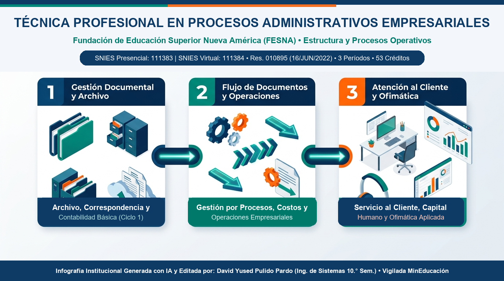

🎬 Video Explicativo con IA: Procesos Operativos Empresariales
Video Explicativo IAExplicación paso a paso de los procesos operativos empresariales (archivo, flujo de documentos, atención al cliente) en los 3 primeros períodos de formación.
📊 Infografía Institucional Generada con IA
Infografía con IAInfografía sintética sobre la estructura organizacional operativa y los tres pilares del programa (Gestión Documental, Flujo de Operaciones y Atención al Cliente).


Primer Período
- Fundamentos de Administración
- Contabilidad Básica
- Fundamentos de Mercadeo
- Constitución Política de Colombia
- Cátedra Nueva América 1
- Proyecto de Vida
- Fundamentos de Matemática
- Habilidades Comunicativas
- Manejo de Herramientas Ofimáticas
Segundo Período
- Proceso Administrativo
- Tecnologías Aplicadas a la Administración
- Costos y Presupuestos
- Gestión por Procesos
- Derecho Laboral
- Electiva Complementaria 1
- Estadística Descriptiva
- Investigación 1
Tercer Período
- Procesos de la Producción y Operaciones
- Procesos de Capital Humano
- Legislación Comercial
- Opción de Grado Técnica Profesional
- Práctica Técnica Profesional
- Electiva Profundización 1
- Curso propedéutico: Estadística Inferencial